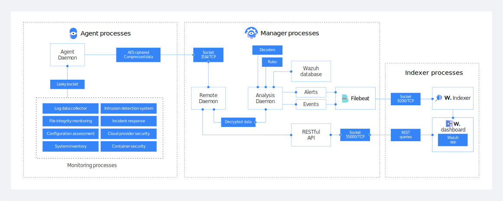
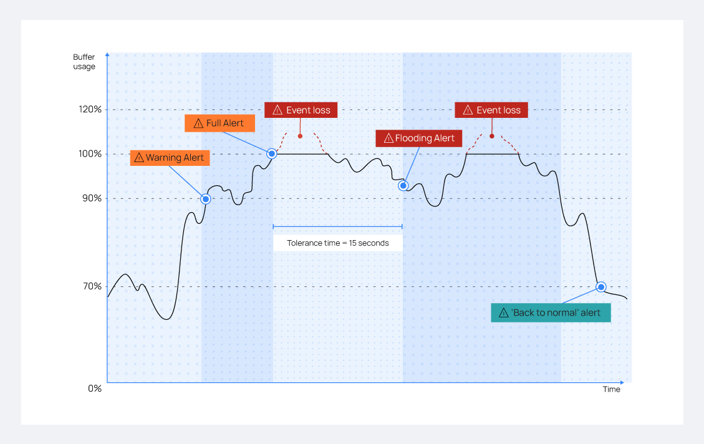
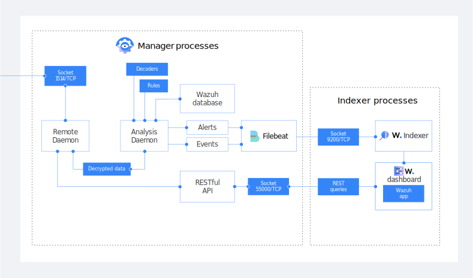

Introduction
wazuh
- Built on the OSSEC project (GPLv2 fork)
- Over 8 years of aggressive development
- Massive expansions to legacy OSSEC functionality
- Integration with other major tools and service
- Constant improvement and support
What is Wazuh?
- A situational awareness tool for your electronic assets
- An important resource for achieving regulatory security compliance
Main Components
- Log Collection
- Log Analysis (customizable set of over 4000 HIDS rules)
- File Integrity Monitoring
- Host-based anomaly detection
- Security compliance scanning for known vulnerabilities
- Real time alerting (e-mail, SMS, Slack, etc)
- Active Response (a HIDS-driven IPS implementation)
Agents available for many diverse platforms
- Linux (Debian, CentOS, RedHat, SUSE, Amazon Linux, etc)
- BSD (FreeBSD, OpenBSD, NetBSD)
- Solaris (10 & 11)
- AIX (5.3 or greater)
- MacOS
- Windows
- HP-UX (11v3)
- Note: For downloading and installing the latest Wazuh and related packages: https://wazuh.com/start/
Wazuh Architecture
Wazuh Architecture

Wazuh Processes
Each process is executed with limited privileges.
- Processes are run in a chroot environment where feasible.
- Processes are executed as unprivileged users where feasible.
Wazuh processes on Linux systems are controlled using the relevant tool (i.e. systemctl, service, initctl)
C:\Program Files (x86)\ossec-agent\win32ui.exe is the Windows management tool for controlling the Wazuh service on Windows agents.
Network Communications
- Agent-Manager connections are compressed and encrypted with per-agent pre-shared keys (AES) over tcp or udp 1514.
- Remoted can directly accept TCP and/or UDP port 514 messages from syslog-sending devices.
- For more robust centralized syslog collection, syslog server(s)can be used on agent(s) or manager.
Wazuh Secure Communication
- All Wazuh communications are authenticated and encrypted with AES or TLS.
- Wazuh manager worker nodes use AES to sync configuration and state data with the manager master node.
- Each Wazuh agent is assigned a unique key for reporting to the manager.
- Significant privilege separation and isolation is built into the solution.
It is still wise to limit access to the central components since:
- It centralizes priviledged security information of all monitored assets.
- It can trigger Active Responses or other remote commands if enabled.
Flood Protection

Flood Scenario
- Leaky bucket buffer flooding scenario with alerts and final recovery.
Lab Exercise Set
Lab Exercise 1A: Wazuh server Configuration
| Lab Objective: | Do some basic configuration of the Wazuh Manager and authenticate with and query the Wazuh API for the first time. |
|---|
Lab Exercise 1B: Wazuh Web UI
| Lab Objective: | Briefly explore the Wazuh dashboard. |
|---|
Agent Registration
Authd Registration Service
- Agents must have a registration allocated in the Wazuh system before they can report in.
- Authd on any Wazuh manager answers agent requests for registration.
- This is unauthenticated by default but at least password protection is recommended.
- Certificate based self-registration authentication is also possible.
- Agents have multiple methods they can use to request a registration.
Agent Initiating Registration
- Agent auto-enrollment (default)
- Using agent-auth tool
- With agent installer via deployment variables
- Requesting registration directly from Wazuh API (rare)
Lab Exercise Set
Lab Exercise 1C: Auto enrollment
| Lab Objective: | Register your linux-agent with your Wazuh manager using auto enrollment. |
|---|
Lab Exercise 1D: Deployment Variables
| Lab Objective: | Install and register your windows-agent with deployment variables. |
|---|
Lab Exercise 1E: Agent-auth tool
| Lab Objective: | Register your indexer agent with the agent-auth tool. |
|---|
Remotely upgrading Wazuh Agents
Ways to remotely upgrade Wazuh agents
Instead of manually upgrading Wazuh directly on agent systems, or using yum/apt repositories you can push Wazuh agent upgrades out from your Wazuh managers to connected agents, even to remote ones.
- Wazuh API:
- automatically routes upgrade tasks to the right managers
- agent_upgrade (legacy):
- a CLI tool to upgrade agent(s) in a single-manager setups
- not for use with Wazuh managed cloud, or manager clusters
- Web Interface
- Through the API Console on the web interface users may interact with the API to initiate the agent upgrade
Lab Exercise
Lab Exercise 1F: Agent remote upgrade
| Lab Objective: | From the Wazuh Manager, push an upgrade to the outdated Wazuh Agent on the indexer system. Do this with the Wazuh API both through the command line and the web interface’s API Console. |
|---|
General Configuration
ossec.conf
- primary configuration file on managers and agents
- location
- /var/ossec/etc/ossec.conf
- C:\Program Files (x86)\ossec-agent\ossec.conf
- /Library/Ossec/etc/ossec.conf
- ossec.conf controls the core components of Wazuh
- log analysis
- file integrity monitoring (syscheck)
- rootkit detection
- active-response
- loads the decoders & the rules.xml files
- controls the notification (e.g. e-mail)
internal_options.conf
Low-level config file for managers and agents
- Location
- internal_options.conf
- shows all options, but is overwritten by Wazuh upgrades
- local_internal_options.conf
- copy items from internal_options.conf here to customize
internal options are for:
- controlling debug level for specific daemons
- enabling/disabling grouping of email alerts
- enabling/disabling remote commands
- various other obscure settings generally best left alone
Handle with care!
Agent Configuration
- Location
- /var/ossec/etc/shared/*GROUP*/agent.conf
- Multiple possible *GROUP* locations, each servicing a different group of agents. Agents can be in multiple groups
- Controlled by agent_groups command on the manager. Default group is called default
- Agents pull it from the Wazuh manager, quickly fetching new versions and automatically restarting to apply them.
- agent.conf should never be edited on the agent side as changes will quickly be overwritten with the manager’s version.
- Specific agent config sections are possible on a per-OS, per-profile, and per-agent basis, allowing great flexibility.
- Editable from the Web Interface
Agent groups and profiles
Important tools for organizing the different configuration setting you will need use on different groups/types of agents.
- agent groups
- configuration profiles
Agent groups and profiles
In an agent’s ossec.conf, the <config-profile> line can include multiple profiles:
Example ossec.conf on agent
<client>
<config-profile>amzn,amzn2,indexer</config-profile>
<server>
<address>wazuh-manager.company.com</address>
</server>
</client>
Example agent.conf on manager (in sca agent group)
<agent_config profile="amzn">
<sca>
<policies>
<policy>cis_amazon_linux_2.yml</policy>
</policies>
</sca>
</agent_config>
Agent.conf large example
agent.conf (on manager)
<agent_config>
...
</agent_config>
<agent_config os="Linux">
...
</agent_config>
<agent_config os="Windows">
...
</agent_config>
<agent_config profile="indexer">
...
</agent_config>
<agent_config name="linux-agentX5">
...
</agent_config>
Lab Exercise
Lab Exercise 1G - Centralized agent configuration
| Lab Objective: | Configure two agent groups, each with a multi-level agent.conf. Confirm agents are getting and using the config content relevant to them within their group. |
|---|
Mass deployment discussion
- Map out necessary agent groups
- If desired prepare a custom local agent configuration
- Additional software to be installed alongside Wazuh
- Supply custom configurations (SCA, Active Response, etc.)
- If remote commands are desired adjust internal configuration files
Log Analysis
Log Analysis with Wazuh
Wazuh’s log analysis engine is capable of:
- extracting important fields from a log message
- identifying & evaluating the content of a log message
- categorizing it by matching specific rules
- and consequently generating an alert from it.
Log Flow
- wazuh-logcollector on the agent collects the logs
- wazuh-analysisd on the manager analyzes the log entries
- wazuh-maild sends out alerts
- wazuh-execd used for Active Response
Stages of Log Analysis
- Log collection on agents as defined in <localfile> sections
- These define a <log_format> that informs pre-decoding.
- For json logs, these also can define one or more additional fields to mark the json logs to clearly indicate the log type or source, to inform rule-based analysis.
- Pre-decoding
- Extracts basic fields based on <log_format> value of source, like program_name from from the syslog header
- Decoding
- Extracts program-specific fields like srcip or username
- Rule-based analysis of decoded log
- One more more instances and types of matching criteria can be against individual log fields or the whole log.
- Matching of field values against CDB lists also supported.
Example <localfile> sections
Collecting a file, a Windows EventChannel and a set of files by using a wildcard:
<localfile>
<log_format>syslog</log_format>
<location>/var/log/messages</location>
</localfile>
<localfile>
<log_format>eventchannel</log_format>
<location>Application</location>
</localfile>
<localfile>
<log_format>json</log_format>
<location>/var/log/suricata/eve-*.json</location>
<label key="@source">suricata</label>
</localfile>
Command type <localfile> sections
Configuration to collect the output of a command:
<localfile>
<log_format>full_command</log_format>
<command>netstat -natp | grep '^tcp .*LISTEN ' | sort | sed 's/LISTEN \+[0-9]\+\///g'
| grep -v "127.0.0.1:" | awk '{print $4"\t"$6}'</command>
<frequency>300</frequency>
<alias>netstat listening ports</alias>
</localfile>
<rule id="533" level="7">
<if_sid>530</if_sid>
<match>ossec: output: 'netstat listening ports</match>
<check_diff />
<description>Listened ports status (netstat) changed (new port opened or closed).
</description>
<group>pci_dss_10.2.7,pci_dss_10.6.1,gpg13_10.1,gdpr_IV_35.7.d,hipaa_164.312.b,
nist_800_53_AU.14,nist_800_53_AU.6,tsc_CC6.8,tsc_CC7.2,tsc_CC7.3,</group>
</rule>
Various log samples
pam / squid / apache log samples
2016-03-15T15:22:10.078830+01:00 tron su:pam_unix(su-l:auth) :authentication failure;logname=tm uid=500 euid=0 tty=pts/0 ruser=tm rhost= user=root1265939281.764 1 172.16.167.228 TCP_DENIED/403 734 POST "http://lbcore1.metacafe.com/test/SystemInfoManager.php" - NONE/- text/html[Sun Mar 06 08:52:16 2016] [error] [client 187.172.181.57] Invalid URI in request GET: index.php HTTP/1.0
Example 1/2
Log:
Dec 5 00:08:49 manager6 sshd[25467]: Failed password for root from
113.195.145.13 port 19044 ssh2
Pre-decoding :
hostname: manager6
program_name: sshd
log: Failed password for root from 113.195.145.13 port 19044 ssh2
Example 2/2
Log:
Dec 5 00:08:49 manager6 sshd[25467]: Failed password for root from
113.195.145.13 port 19044 ssh2
Decoding :
decoder: sshd
dstuser: root
srcip: 113.195.145.13
srcport: 19044
Logging alerts to alerts.json
- When <jsonout_output> is enabled in the manager’s ossec.conf, alerts are recorded as JSON records in alerts.json. These are normally shipped by Filebeat to the Wazuh indexer or on alternate installations to Elasticsearch or by Splunk Universal Forwarder to Splunk.
- /var/ossec/logs/alerts/alerts.json:
{"timestamp":"2020-12-07T21:44:37.313+0000","rule":{"level":5,
"description":"sshd: Reverse lookup error (bad ISP or attack).
","id":"5702","firedtimes":58,"mail":false,"groups":["syslog"
,"sshd"],"pci_dss":["11.4"],"gpg13":["4.12"],"gdpr":
["IV_35.7.d"],"nist_800_53":["SI.4"],"tsc":["CC6.1","CC6.8",
"CC7.2","CC7.3"]},"agent":{"id":"000","name":"manager1"},
"manager":{"name":"manager1"},"id":"1607377477.3731351",
"cluster":{"name":"wazuh","node":"master"},"full_log":"Dec
7 21:44:37 ip-10-0-1-1 sshd[22566]: reverse mapping checking
getaddrinfo for 190.202.147.253.estatic.cantv.net [190.202.147.253]
failed - POSSIBLE BREAK-IN ATTEMPT!","predecoder":
{"program_name":"sshd","timestamp":"Dec 7 21:44:37","hostname"
:"ip-10-0-1-1"},"decoder":{"parent":"sshd","name":"sshd"},"data"
:{"srcip":"190.202.147.253"},"location":"/var/log/secure"}
Logging alerts/events to archives.json
- Alternatively, when <logall_json> is enabled, all events are logged to archives.json whether or not they match a rule.
- /var/ossec/logs/archives/archives.json
{"timestamp":"2017-12-05T02:51:36+0000","rule":{},"agent":{"id":"000"
,"name":"manager6"},"manager":{"name":"manager6"},"id":"1512442296.
149532","full_log":"Dec 5 02:51:35 manager6 sshd[382]: Disconnected
from 113.195.145.13 port 48727 [preauth]","predecoder":{"program_name"
:sshd","hostname":"manager6"},"decoder":{"name":"sshd"},"location":
"/var/log/secure"}
Log retention considerations
Considerations regarding alerts.json and archives.json
- These files are rotated and compressed daily by default.
- They accumulate indefinitely unless you add a process to delete old files.
- Sample cron one-liner to daily remove 7+ day old rotated files:
0 2 * * * root find /var/ossec/logs/{alerts,archives} -mtime +7 -exec rm {} \;
- The archives.json file contains both alerts and non alerting events.
- To split the routing of archives.json across multiple index patterns, the Wazuh Filebeat module must be customized.
- Rotated files can be used to reinject one or more past day’s worth of alerts.json or archives.json files back to the Wazuh indexer. See: https://wazuh.com/blog/recover-your-data-using-wazuh-alert-backups/
Log Analysis and Regulatory Compliance
- Computer-aided log analysis is a powerful tool for identifying threats or potential problems within a vast stream of collected log events.
- Many regulatory compliance requirements call for regular review of security logs.
- This is generally not feasible nor sustainable without the aid of machine analysis and categorization.
- It can also help classify which events need to be stored in order to comply with regulatory requirements.
- This translates to reduced storage costs.
Why analyze logs?
{kind=link}
{kind=link}
{kind=link}
{kind=link}
{kind=link}
{kind=link}
{kind=link}
{kind=link}
Compliance mapping in Wazuh rules
- The ruleset maintained by Wazuh contains mappings to specific compliance requirements.
- A list of all related Wazuh rules can be found here:
PCI-tagged Wazuh rule :
<rule id="5402" level="3">
<if_sid>5400</if_sid>
<regex> ; USER=root ; COMMAND=| ; USER=root ; TSID=\S+ ; COMMAND=</regex>
<description>Successful sudo to ROOT executed.</description>
<group>pci_dss_10.2.5,pci_dss_10.2.2,gpg13_7.6,gpg13_7.8,gpg13_7.13,
gdpr_IV_32.2,hipaa_164.312.b,nist_800_53_AU.14,nist_800_53_AC.7
nist_800_53_AC.6,</group>
</rule>
Lab Exercise Set
Lab Exercise 2A: Generate a brute-force attack
| Lab Objective: | Repeatedly attempt to use a wrong password with an agent. Monitor the alerts.log, watching for the generation of the brute-force alert. |
|---|
Lab Exercise 2B: Log Analysis
| Lab Objective: | Analyze the log entries resulting from the previous exercise. What is shown and what does it mean? How can you distinguish an attack from a harmless log event? |
|---|
Lab Exercise 2C: Looking up rules
| Lab Objective: | Looking up and tracing Wazuh rules for better understanding of alerts. |
|---|
Wazuh indexer, dashboard and Filebeat
|
|
| The Wazuh dashboard is the web front-end to the data in the Wazuh indexer. This customized package forked from OpenSearch dashboards includes the Wazuh plugin which on top of solution specific dashboards interacts with the Wazuh API to provide visibility and control over the solution’s configuration and status. | |
| Beats is a family of data shippers. Using Filebeat specifically, Wazuh’s alerts.json or archives.json data can be sent to the Wazuh indexer. It also can do data transformation and enrichment, like parsing strings, normalizing field names, and doing geoip lookups. |
Wazuh indexer, dashboard and Filebeat
Indexer and dashboards integration demo
Considerations for the Wazuh indexer
Considerations regarding the Wazuh indexer
- ILM for live indices and snapshots: Blog
- Monitoring health of Wazuh indexer cluster
- Management of shards and replicas
- Index rollover periods
- Access restrictions for the Wazuh indices and for the Wazuh dashboard
- Split routing of alerts across different index patterns
- Data enrichment
- Field normalization
- Field data types like number and ip
- Analysis of at least samples of non-alert Wazuh events